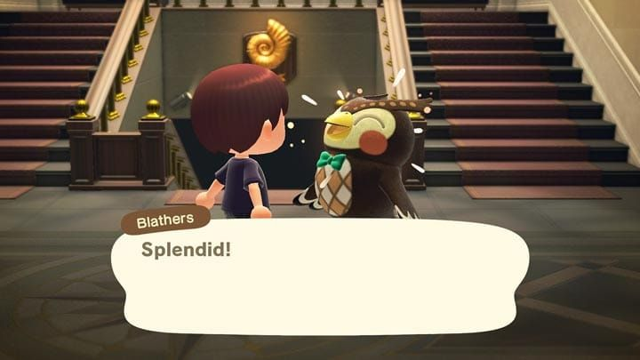
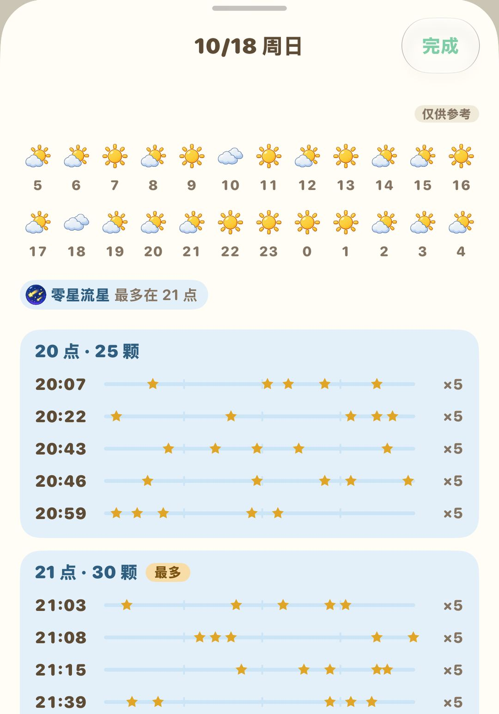
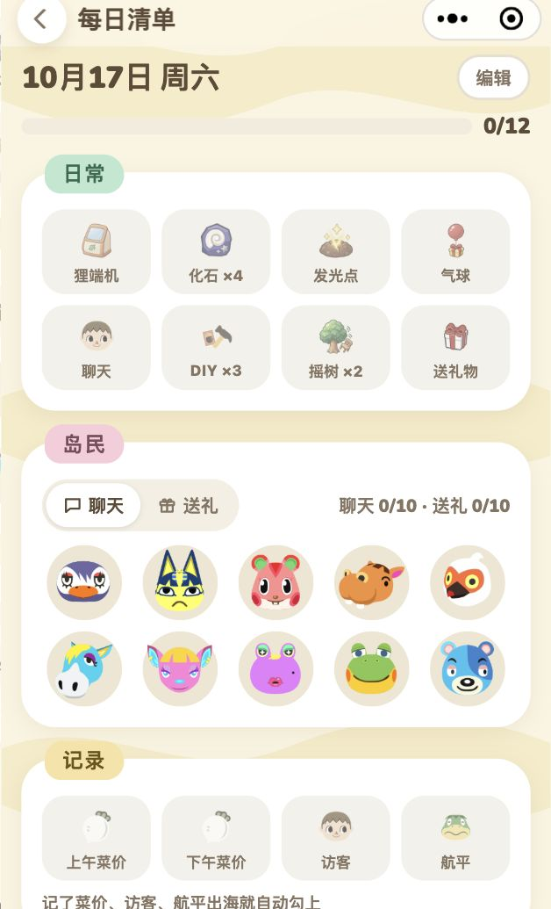

每天上島做這些就夠了
一張日常清單、一週裡的固定日子，和一條不走回頭路的順序
島上每天都會刷新一批東西：埋在地下的化石、能敲出材料的石頭、商店新進的貨，都在早上 5 點換新。遊戲的一天從早上 5 點算起，所以半夜 1 點上線，遊戲裡算的還是前一天，要等過了 5 點才輪到新的一天。
每天要做的事看起來零碎，其實大部分繞島走一圈就能順手撿完。再記住一週裡的三個固定日子：週日上午買大頭菜，週一旅館委託換新，週六晚上聽 K.K.。路線排順了，先把口袋清空再進店，一般二三十分鐘就能做完。
01繞島一圈要撿的
出門先帶上鏟子，沿著島走一圈，下面幾樣每天都有。
化石
地上有星形裂縫的地方埋著化石，每天 4 個。挖出來先拿去博物館請傅達鑑定，博物館裡缺的就捐掉，重複的留著賣錢。

挖到的化石拿去博物館給傅達鑑定（英文版畫面）（圖：任天堂）
石頭
島上的石頭每天都能敲出石頭、黏土、鐵礦石，偶爾還會蹦出金礦石。其中一塊是金錢石，敲出來的是鈴錢。敲之前在自己身後挖幾個洞把退路堵住，人就不會被彈開，能連敲 8 下，一塊石頭的份一次敲滿。
發光點
每天地上會有一處在閃閃發光，挖開是一袋鈴錢。挖完別急著把洞填上，往洞裡埋鈴錢就能種發財樹，長大以後結出三袋同樣金額的錢。玩家的經驗是埋 1 萬以內比較穩。
瓶中信
沙灘上每天會漂來一個瓶中信，瓶子裡裝著一份 DIY 方程式，繞海邊走的時候順手撿起來。
氣球
天上偶爾飄過掛著禮物的氣球，拿出彈弓把它射下來，掉下來的可能是鈴錢、材料，也可能是家具。
02島民和訪客
島民每天都去聊幾句，關係會慢慢變好，偶爾收到禮物，也會被請去幫點小忙。
每天有一位島民待在家裡對著工作台做東西，進門聊一下就能學到一個新做法。路過島民家時挨家進去看看，找到正在做 DIY 的那位。
平日幾乎每天都會來一位特別訪客，可能是賣地毯的駱嵐、收魚的俞司廷、收蟲的龍克斯，也可能是賣花苗的然然。要是在海邊看到暈倒的呂遊，叫醒他、幫他找齊零件，之後他會寄禮物來。每位訪客具體怎麼利用，可以看《每週會來的 NPC》那篇。
露營地有人來露營，也記得過去聊聊，島上有空位的話，可以邀請對方搬來。
03逛一圈店
Nook商店每天都會換一批家具和 DIY 方程式。門口寫著當天的熱門家具，這天賣給商店是兩倍價。手上正好有這件家具，或是材料夠做一件，當天賣掉最划算。
裁縫店每天換一批衣服鞋帽。進試衣間還能試穿、買到當天店裡沒擺出來的款式，想找某件衣服時別只看貨架。
服務處的狸端機裡，「Nook購物」每天有一組「每日精選」，圖鑑裡缺的先訂下，隔天寄到。順手在「Nook集哩遊＋」把完成的任務點一下，領取哩數。
| 店 | 營業時間 |
| Nook商店 | 8:00～22:00 |
| 裁縫店 | 9:00～21:00 |
裁縫店晚上 9 點、商店晚上 10 點就關門了。晚上才上線的話，先去店裡，撿東西的事放到後面。
04碼頭和旅館
島嶼評價到 3 星後，碼頭會停著航平的船，每天可以花 1,000 哩數搭一趟去別的島。那邊的季節、天氣可能和你島上不一樣。
如果已經開了旅館，每天還要多跑這幾件：
8 間客房還沒布置完時，每天最多布置 2 間，每間 200 旅館券。每天把這 2 間用掉，客房能早點布置完。
碼頭的 DIY 收集箱掛著 4 個委託，照著做好交進去，就能換旅館券。
旅館紀念品店每天會擺出兩件打折家具，路過看一眼。
解鎖 VIP 客房以後，每天能布置一間。
旅館的詳細玩法見《3.0 度假飯店》那篇。
05晚上看流星，記住一週的節奏
晴朗的夜裡偶爾會有流星劃過。手裡別拿工具，抬頭按 A 許願，隔天早上海邊就會有星星碎片，能拿去做星座家具和各種棒子。流星雨那天，西施惠早上會在廣播裡預告，傅珂也會來島上。
想提前知道哪天、幾點有流星，可以在動森圈圈的天氣預報裡輸入島嶼種子來查。

天氣預報：每小時的天氣，和哪幾分鐘有流星
除了每天的事，一週裡還有幾個固定日子，錯過了就要再等一週：
| 日子 | 要做的事 |
| 週日上午 | 曹賣來賣大頭菜，中午 12 點前離開 |
| 週一到週六 | 商店收購大頭菜，上午、下午各一個價 |
| 週一 | 旅館收集箱的委託整批換新 |
| 週六晚上 | K.K. 在廣場開演唱會，點歌拿唱片 |
注意週日買的大頭菜到下個週日就壞了，記得在週六商店關門前賣掉。
06一條省時間的路線
每個島的布局都不一樣，路線沒辦法照抄，但思路是通的：先把口袋清空，少走回頭路。下面這個順序可以照著改。
1. 出門先聽西施惠的廣播，弄清楚當天有誰來、晚上有沒有流星雨。
2. 帶上鏟子沿海岸繞一圈，挖化石、敲石頭、撿瓶中信、挖發光點。
3. 路過島民家進去看看，找到正在做 DIY 的那位；廣場上有訪客的話，順便過去打個招呼。
4. 去博物館鑑定化石，再到商店把口袋裡的東西賣掉、看一眼熱門家具，接著逛裁縫店。
5. 到服務處，在狸端機看每日精選、領哩數，鈴錢存進 ATM。
6. 最後去碼頭和旅館，布置客房、交 DIY、逛紀念品店。
天天做的事反而最容易漏掉一兩樣。動森圈圈有每日清單，打開勾一勾，做完哪些一眼就清楚。

小程式裡的每日清單，菜價、訪客、航平記過就自動打勾
當然也不是每樣都非做不可。哪天只想釣魚，那就去釣魚，島不會跑。
動森圈圈 · iOS App 和微信小程式都搜「動森圈圈」